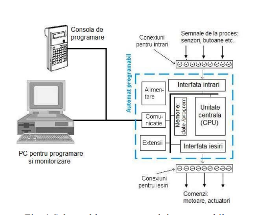

Introduction in FBD programming language. Functional and logic blocks (SET and RESET)
Programming microcontrollers can be useful in a variety of domains such as:
Assembly and manipulation
Buildings automatization
Food and beaverages
HVAC (Heating, Ventilation, and Air Conditioning)
Packaging
Production and processes
Automotive
Basics of Logic Controllers
A Programmable Logic Controller (PLC) is a special microcomputer build to solve logic problems specific to automating processes.
The standard that gives the PLC defintion is IEC 61131-1.

Fig 1. Schema of a PLC architecture
The FBD programming language
We usually program a PLC by connecting a PC to it through a cable. We might as well connect a control console, but it is bothersome and hard to use.
The IEC 61131-3 standard defines 4 languages used for this:
Instruction List (IL)
Structured text (ST)
Ladder Diagram (LD)
Function Block Diagram
FBD is a graphic language used mostly with mini- and microautomated devices. It lets us to build a program with the help of fucntion blocks and graphic
components. Every board we will program will have Input and Output pins, anything in-between will be connected through signal lines.
Functional Blocks
Every function block has an Input (In) and an Output(On) where we can connect our signals. One thing to keep in mind is that the signal that enters
will be the same with the signal that comes out of the block.
One more thing to keep in mind is that the program is executed top-to-bottom, from left to right.
Using the PneuAlpha Visual Logic software (VLS) editor
VLS is a strong tool for this task (old too...). In the past it was considered easy to learn and use but it is not the case anymore,
I can't stress this enough but who am I to oppose my university.
Some key features that the program provides are:
Testing the program
Monitor while it runs
Monitor in the System Sketch window
Create special blocks through combining multiple existing blocks
"Detailed support"
Let's get started with the SET/RESTET block
The SET/RESET block is a 2 In and 1 Out block. We can choose two modes, SET priority or RESET priority.
Which means, if both input signals are turned on, the priority command will take precedence.
Problem 1
Pressing the button B_START, with a normal open cotnact, we turn on the electric engine ME, supplied with 200 Vca.
It remains turned on until we press the B_STOP button.
While the engine is turned on, the lamp LS will stay on and be supplied 24Vcc.
Solution
Because they are supplied with different voltages, we have to put them on different outputs, O1 and O2 respectively.
ECC-PNAL2-24MR-D, DC Input. Relay OutputStart and Stop of the system